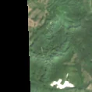
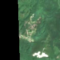

5,8 ha de pădure schimbată lângă Runcu
Între vara lui 2025 și 14 mai 2026, pe aproximativ 5,8 ha de pădure din comuna Golești, lângă Runcu, județul Vâlcea, imaginile Sentinel-2 arată că vegetația a dispărut sau s-a schimbat puternic. În registrul public există o autorizație de tăiere pentru acest loc.
Autorizația de tăiere
cu autorizație
Parcela autorizată acoperă zona, iar autorizația era valabilă când s-a tăiat.


Înainte și după: Copernicus Sentinel-2, 10 m pe pixel, conturul zonei cu portocaliu. Poza detaliată (Esri World Imagery) e de acum 1–4 ani: arată ce era acolo înainte, nu tăierea.
Pe scurt
- Identificator
- 20260514_45154_24459
- Locul
- Runcu, comuna Golești, județul Vâlcea (SIRUTA 170220)
- Coordonate (centru)
- 45.15426, 24.45862 · Google Maps · OpenStreetMap
- Suprafața
- 5,8 ha (din pixeli de 10 m; ± câțiva pixeli pe margine)
- Pădurea întreagă
- în vara lui 2025 (de atunci, nori sau iarnă)
- Prima imagine cu schimbarea
- 14 mai 2026
- Imagini în care se vede schimbarea
- 7
- Cât de sigur e semnalul din satelit
- ridicată
- Autorizația cea mai apropiată
- APV 2400155103950 · Ocolul Silvic Râmnicu Vâlcea, valabilă 24 septembrie 2025 – 31 decembrie 2025, la 0 m de zonă
- Terenul
- pădure de stat, după amenajamentul silvic publicat
- Pădure pierdută în jur, alți ani
- 2005, 2008, 2013, 2014, 2017 (Hansen)
- Garda Forestieră
- Râmnicu Vâlcea
Dacă vrei să verifici sau să sesizezi
- Pădurile din județul Vâlcea sunt în grija Gărzii Forestiere Râmnicu Vâlcea, care controlează tăierile și dă amenzile.
- Autorizația găsită în zonă e emisă de Ocolul Silvic Râmnicu Vâlcea.
- Formularul Gărzii Forestiere Naționale primește sesizări și fără nume. Trimite linkul acestei pagini, coordonatele și pozele. Dacă tăierea e în desfășurare, sună la 112.
- Autorizațiile și transporturile de lemn se pot căuta în Inspectorul Pădurii.
Pagina arată ce se vede din satelit și ce scrie în registrul public; nu e o dovadă în sine.
Cum citezi zona
Linkul acestei pagini nu se schimbă. Dacă zona iese vreodată de pe hartă, pagina rămâne, cu data și cu ce știam despre ea.
Pădurea RO, zona 20260514_45154_24459: 5,8 ha, Runcu, comuna Golești, județul Vâlcea; schimbare văzută din satelit între vara lui 2025 și 14 mai 2026. https://iliemihai.github.io/padurea-ro/zona/20260514_45154_24459/ (consultat la [data]). Date: CC BY 4.0.
Datele zonei: GeoJSON · toate zonele: date deschise · licența CC BY 4.0.
Istoricul zonei pe hartă
Starea se poate schimba când registrul publică o autorizație sau când analistul vede poze mai bune. O ținem aici, ca un link citat să arate și ce spuneam atunci.
Pe hartă cel târziu din 5 noiembrie 2026.
- 5 noiembrie 2026 – azi · cu autorizație
Detalii tehnice, pentru verificare
De ce acest nivel de încredere:
- văzută schimbată în 7 imagini diferite
- peste 3 ha
- pădurea din jur e neschimbată
- ultima dată am văzut-o intactă în vara lui 2025 (de atunci, nori sau zăpadă)
- AI-ul vede pădure dispărută
- Placa Sentinel-2
- 35TLL
- NDVI de referință
- 0.83
- NBR de referință
- 0.57
- Scăderea în pădurea din jur
- 0.0
- Persistență
- 0.8
- NDVI / NBR după
- 0.559 / 0.311
- Analistul de zi (model)
- taiere · 0.85 · claude-haiku-5-5
Cum se calculează fiecare: metodologia.
Pune harta zonei într-un articol
Copiază codul în articol (merge în majoritatea site-urilor de știri). Sau pune doar linkul: WhatsApp, Facebook și X arată singure poza zonei.